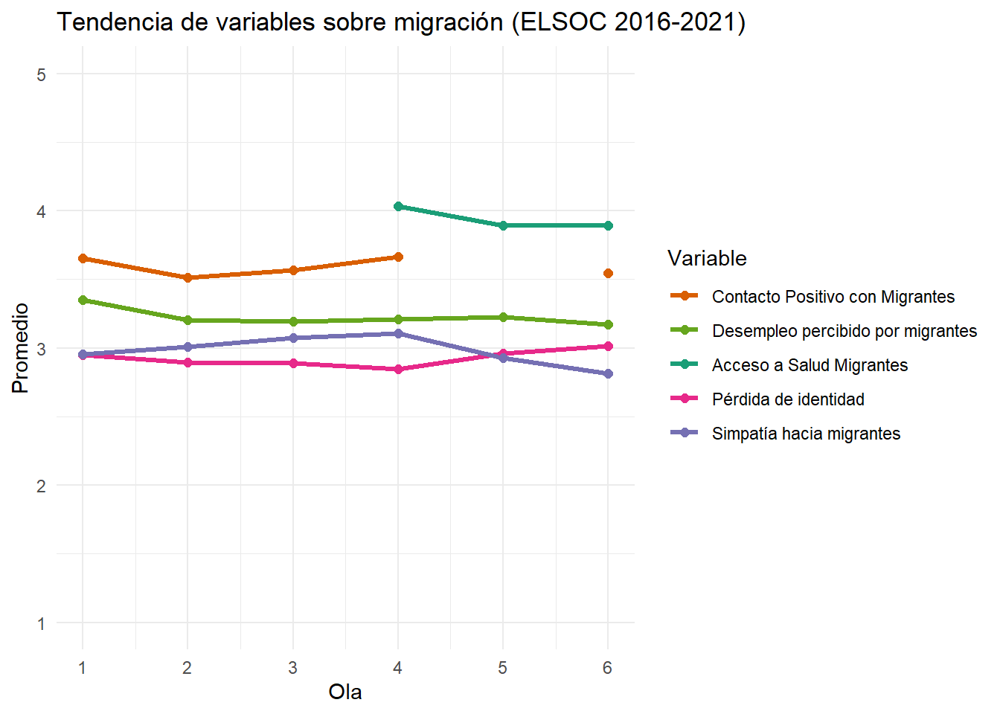
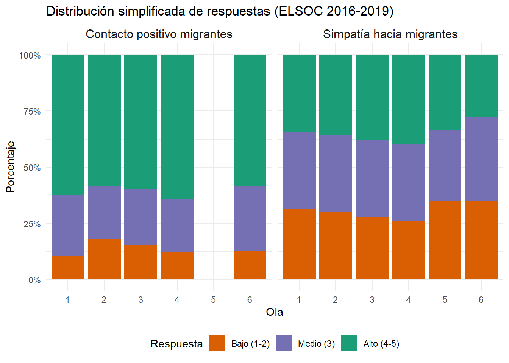
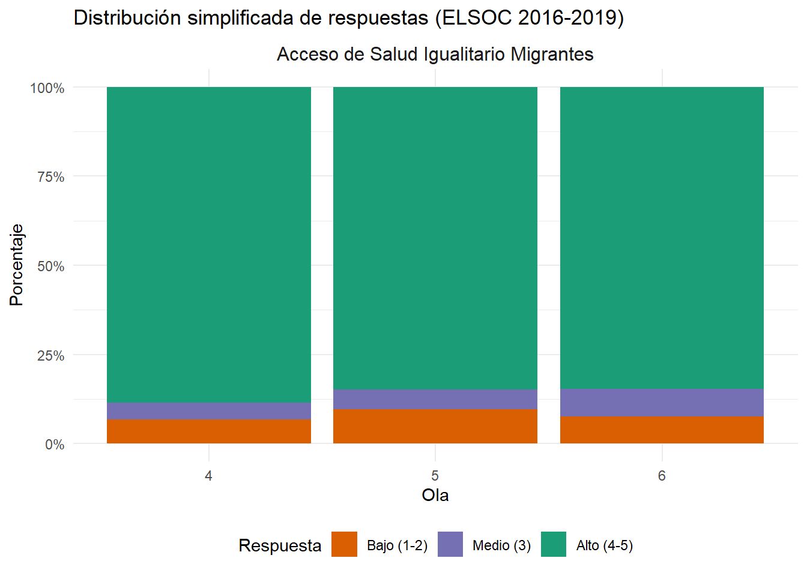

Warning: Removed 3 rows containing missing values or values outside the scale range
(`geom_line()`).Warning: Removed 4 rows containing missing values or values outside the scale range
(`geom_point()`).


De acuerdo con los resultados de migración presentes en el CENSO 2024, Chile alberga aproximadamente 1,6 millones de De acuerdo con los resultados del CENSO 2024, la población nacida fuera de Chile asciende a aproximadamente 1,6 millones de personas. Esta cifra representa un 8.8% de la población total residente en el país, lo que duplica el porcentaje de 4.4% registrado en el censo anterior de 2017.
Del total de inmigrantes internacionales, 508.178 personas llegaron al país antes de 2017, mientras que 1.085.538 lo hicieron a partir de ese año. El mayor flujo migratorio se concentró en el período 2017-2019, con cifras anuales del 10.4% (2017), 12.4% (2018) y 10.7% (2019) del total de personas migrantes que declararon su año de ingreso.
Con predominio de mujeres (51.7%) y concentración etaria entre 30 y 39 años. El grupo principal corresponde a las personas provenientes de Venezuela (41.6%), seguido de Perú (14.5%) y Colombia (12.3%) (CENSO, 2024).
La migración se ha convertido en un tema central de la agenda pública, no solo como desafío administrativo, sino también como eje de conflicto social. El cambio abrupto tanto en la magnitud como en la composición de los flujos ha tensionado los patrones de interacción social y los marcos institucionales disponibles para procesar el fenómeno (Lang et al., 2024).
Este escenario ha generado un periodo de adaptación inestable entre migrantes y población local, en el que la inclusión social se ve dificultada por la rapidez y densidad del cambio (Lang et al., 2024). En consecuencia, las percepciones ciudadanas hacia los migrantes recientes se caracterizan por una fuerte ambivalencia: mientras una mayoría de chilenos (74%) y migrantes previos (72%) declara una visión negativa respecto de quienes llegaron en los últimos cinco años (CEP, 2024), también se reconoce a este grupo como trabajadores y honestos, aunque simultáneamente se les asocie con delincuencia o falta de respeto a las costumbres locales.
La evidencia muestra que estas percepciones contradictorias dependen fuertemente de la experiencia individual y contingente de la interacción, de modo que el mismo espacio —la calle, el barrio o el trabajo— puede ser escenario tanto de relaciones positivas como negativas (CEP, 2024). La falta de anclajes institucionales y discursivos que otorguen estabilidad a estas experiencias refuerza la polarización y la incertidumbre, situando a los migrantes recientes como objeto de juicios extremos, ya sea positivos o negativos (Lang et al., 2024).
La macrozona norte del país es un caso particularmente relevante, dado que concentra una alta densidad de población migrante (CENSO, 2024) y enfrenta un contacto cotidiano más frecuente con ellos (INE, 2022). No obstante, contrariamente a lo sugerido por la literatura sobre contacto intergrupal, que indica que la interacción sostenida tiende a reducir prejuicios (Voci & Hewstone, 2003; Paolini et al., 2014), en esta zona se observa una asociación significativa entre mayor exposición y percepciones más negativas, especialmente en aspectos normativos como el respeto a las leyes o a las costumbres chilenas (CEP, 2024). Este hallazgo coincide con tesis como la de Putnam (2007), quien advierte que la diversidad puede generar actitudes hostiles en el corto plazo, antes de que se consoliden procesos de integración.
Warning: Removed 3 rows containing missing values or values outside the scale range
(`geom_line()`).Warning: Removed 4 rows containing missing values or values outside the scale range
(`geom_point()`).
